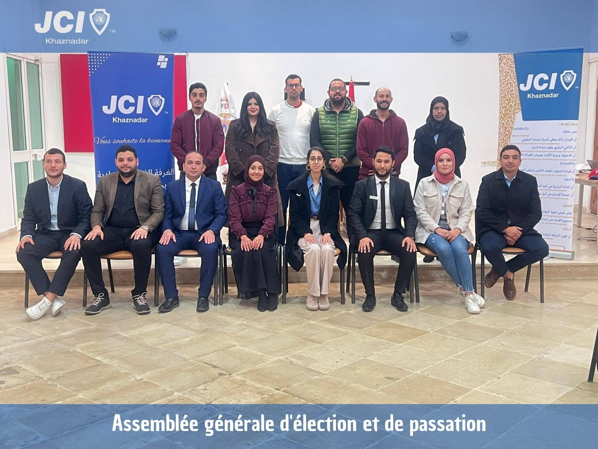

Humanitaire
Actions solidaires, collectes et campagnes de sensibilisation au service de la communauté du Bardo.

Filière de JCI Tunisie · Le Bardo, Tunis
JCI Khaznadar rassemble depuis 1988 de jeunes actifs de 18 à 40 ans qui développent leur leadership en agissant concrètement pour leur communauté : humanitaire, citoyenneté, culture et sport.
Qui sommes-nous
JCI Khaznadar est une Organisation Locale Membre (OLM) de JCI Tunisie, elle-même rattachée à JCI International, fédération mondiale présente dans plus de 100 pays qui rassemble de jeunes actifs déterminés à créer un impact positif.
Implantée à Khaznadar, au cœur du Bardo, notre chambre est active depuis 1988. Nous croyons que le développement personnel passe par l'action citoyenne : chaque projet que nous menons est aussi une occasion pour nos membres de renforcer leur leadership.
Notre mission & nos valeurs
Cinq convictions fondatrices guident chacune de nos actions, en fidélité à l'esprit du mouvement JCI international.
Nous Croyons :
ميثــاق الغرفــة الفتيــة
: نحــن نعتقــد
Nous croyons que la fraternité humaine transcende la souveraineté des nations.
Nous croyons que la liberté de l'être humain doit être garantie par la loi.
Nous croyons en l'État de droit comme fondement d'une société juste.
Nous croyons que le développement de la personne dans son intégralité permet à l'humanité de progresser.
Nous croyons que le service humanitaire désintéressé est la plus noble entreprise humaine.
Nos actions
Quatre grands axes structurent les projets que nous menons tout au long de l'année.
Actions solidaires, collectes et campagnes de sensibilisation au service de la communauté du Bardo.
Formations en leadership, ateliers de citoyenneté active et projets de sensibilisation civique.
Rencontres avec d'autres chambres JCI en Tunisie et à l'international pour un dialogue interculturel.
Tournois, sorties et activités conviviales qui renforcent la cohésion entre nos membres.
Notre équipe
Une équipe de bénévoles engagés qui pilote les projets et la vie de la chambre.
Actualités
Un aperçu de nos activités récentes. Retrouvez toute notre actualité, en photos, sur notre page Facebook.
Toutes nos photos et actualités en direct sont publiées sur Facebook.
Rejoignez-nous
Rejoindre JCI, c'est développer son leadership, agir concrètement pour sa communauté et intégrer un réseau international de jeunes actifs.
Formations, ateliers et responsabilités de projet dès votre arrivée.
Accès aux événements et échanges de JCI Tunisie et de JCI International, dans plus de 100 pays.
Participez à des projets humanitaires, citoyens, culturels et sportifs qui changent concrètement le quotidien.
Gestion de projet, prise de parole, travail d'équipe : des compétences valorisées dans votre carrière.
Contact
Nous serons ravis de vous répondre et de vous accueillir lors de notre prochaine réunion.
Khaznadar, Le Bardo, 2017, Gouvernorat de Tunis, Tunisie